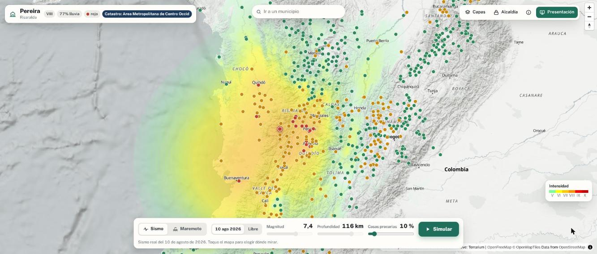
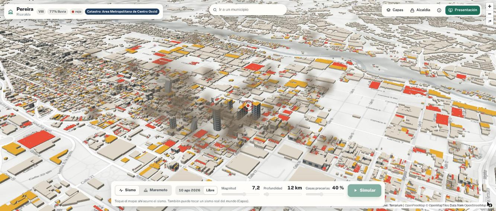

El sismo ya pasó. La temporada de lluvias no.
Un gemelo digital para reconstruir seguro el territorio afectado.
335 personas murieron. 36.478 viviendas quedaron destruidas y 206.931 con daños.
7,1 millones de personas sintieron intensidad VII o más.

Nuestro modelo de riesgo climático ya los señalaba antes del sismo:
Intensidad del sismo · probabilidad mensual de emergencia por lluvia
Cada edificación del territorio afectado, con su sismo, su lluvia y su escombro.
Simular
Sismos y maremotos sobre el mapa real, en cualquier municipio.
Decidir
Qué se repara, qué se demuele y dónde es seguro volver a construir.
Reconstruir
El escombro se vuelve material certificado y la comunidad construye seguro.
5.2.2
Escombro convertido en material. Visión por computador clasifica el escombro, un modelo predice el desempeño del material reciclado y ensayos bajo NTC y NSR-10 lo certifican. Bloques, adoquines y concreto no estructural, producidos por la comunidad.
5.1.2
Estabilidad de laderas y suelos. Modelos predictivos de deslizamientos y licuación en zonas afectadas, para decidir dónde es seguro reconstruir.
5.1.3
Evaluación rápida de daños estructurales. Visión por computador con imágenes de drones y satélite, y fotos ciudadanas, para clasificar edificaciones por nivel de daño y priorizar inspecciones. Se puede validar contra las inspecciones en terreno de los ingenieros.
374.125
Con número de pisos y tipo de construcción. Lo no convencional es lo más frágil.
45
El IGAC publica quién tiene el inventario de cada municipio.
1:100.000
Capacidad de uso de las tierras en todo el país; más detalle en Pereira.
30 m
Modelo de elevación, cartografía municipal y observatorio inmobiliario para estimar pérdidas en pesos.

AUC 0,78
Modelo de riesgo climático del equipo. 1.102 municipios, datos abiertos, validado en tres cortes temporales.
626 ≈ 571
Gemelo digital calibrado con Pereira. Viviendas destruidas simuladas frente a las reales, de 136.803. Difieren menos del 10 %.
Hoy TRL 6. Meta: TRL 9, con la solución adoptada por las alcaldías y en uso.
500
RECONSTRUYE · Convocatoria 56 · Minciencias